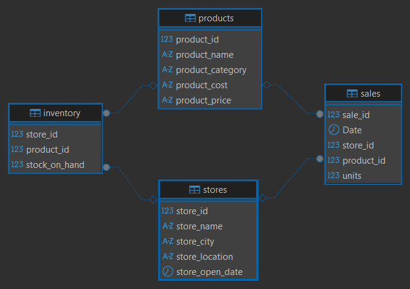

Analiza sprzedaży, rentowności i zapasów sieci Maven Toys
Kompleksowe studium przypadku SQL poświęcone analizie sprzedaży, rentowności, wyników sklepów, trendów oraz aktualnego poziomu zapasów fikcyjnej sieci Maven Toys działającej w Meksyku.
Przeanalizowałam ponad 829 tys. transakcji sprzedaży z okresu od stycznia 2022 roku do września 2023 roku. Celem projektu było przejście od surowych danych źródłowych do wniosków i rekomendacji wspierających decyzje dotyczące produktów, sklepów oraz zarządzania zapasami.
1Problem i cel projektu
Sieć posiadająca wiele sklepów i produktów potrzebuje nie tylko informacji o całkowitym przychodzie. Do podejmowania decyzji biznesowych konieczne jest również ustalenie:
- które produkty i kategorie generują największy zysk,
- jak zmieniają się wyniki w czasie,
- które placówki osiągają najlepsze rezultaty,
- czy poziom zapasów odpowiada bieżącej sprzedaży,
- gdzie występuje ryzyko braku produktów,
- gdzie środki są zamrożone w nadmiernym zapasie.
Przygotowałam analizę odpowiadającą na następujące pytania:
- jaki jest łączny przychód, koszt produktów, zysk brutto na sprzedaży i marża brutto,
- które kategorie i produkty osiągają najlepsze wyniki,
- jak przychód zmienia się miesiąc do miesiąca i rok do roku,
- czy pod koniec analizowanego okresu widoczne jest przyspieszenie lub osłabienie sprzedaży,
- które sklepy i typy lokalizacji osiągają najlepsze wyniki,
- jaka jest aktualna wartość zapasów,
- które kombinacje sklep–produkt mają zbyt niski, optymalny lub nadmierny zapas,
- gdzie występuje brak zapasu pomimo wcześniejszej sprzedaży,
- gdzie zapas pozostaje w sklepie mimo braku sprzedaży.
Projekt przygotowałam jako kompletną analizę biznesową wykonaną w SQL, a nie tylko zbiór pojedynczych zapytań technicznych.
2Dane
Dane pochodzą z publicznego zbioru Maven Analytics i przedstawiają fikcyjną sieć sklepów z zabawkami działającą w Meksyku.
| Tabela | Zawartość | Liczba rekordów |
|---|---|---|
sales | Transakcje sprzedaży produktów według sklepów | 829 262 |
products | Nazwy, kategorie, koszty i ceny produktów | 35 |
stores | Sklepy, miasta, typy lokalizacji i daty otwarcia | 50 |
inventory | Aktualny zapas według sklepu i produktu | 1 593 |
Dane sprzedażowe obejmują okres od 1 stycznia 2022 roku do 30 września 2023 roku.
Tabela inventory przedstawia aktualny stan zapasów. Umożliwia ocenę ich poziomu i struktury, ale nie pokazuje historycznych zmian stanów magazynowych.
Źródło danych: Mexico Toy Sales – Maven Analytics
3Struktura bazy danych
Główną tabelą transakcyjną jest tabela sales. Każdy rekord sprzedaży jest powiązany z konkretnym produktem i sklepem. Tabela inventory również łączy produkty ze sklepami, ale przedstawia aktualny stan magazynowy dla konkretnej kombinacji sklep–produkt.
W analizowanej bazie:
sale_idjest kluczem głównym tabelisales,product_idjest kluczem głównym tabeliproducts,store_idjest kluczem głównym tabelistores,- połączenie
store_id + product_idtworzy klucz złożony tabeliinventory, - kolumny
product_idistore_idpozwalają łączyć tabele podczas analizy.
W bazie źródłowej relacje nie były fizycznie zdefiniowane jako klucze obce. Na potrzeby dokumentacji utworzyłam w DBeaverze diagram ERD z relacjami wirtualnymi:
sales.product_id → products.product_id,sales.store_id → stores.store_id,inventory.product_id → products.product_id,inventory.store_id → stores.store_id.
Widoku vw_products_clean nie umieściłam na diagramie, ponieważ utworzyłam go podczas przygotowania danych i nie należy on do czterech tabel źródłowych.

4Kontrola jakości i przygotowanie danych
Przed rozpoczęciem właściwej analizy sprawdziłam jakość, kompletność i spójność danych.
Kontrola obejmowała:
- liczbę rekordów w każdej tabeli,
- brakujące wartości,
- duplikaty kluczy głównych,
- duplikaty klucza złożonego w tabeli
inventory, - zgodność identyfikatorów produktów i sklepów pomiędzy tabelami,
- zakres dat sprzedaży,
- produkty, których cena była niższa lub równa kosztowi,
- kompletność kombinacji sklep–produkt w tabeli zapasów.
Nie znalazłam brakujących wartości, zduplikowanych kluczy, niezgodnych identyfikatorów ani produktów sprzedawanych po cenie niższej lub równej kosztowi.
Koszty i ceny produktów były zapisane jako tekst zawierający symbol waluty. Utworzyłam widok vw_products_clean, w którym usunęłam symbol waluty i przekształciłam wartości do typu DECIMAL(10,2). W ten sposób przygotowałam jednolitą warstwę danych do dalszych obliczeń bez zmieniania tabeli źródłowej.
Dla 50 sklepów i 35 produktów istnieje 1 750 możliwych kombinacji sklep–produkt. Tabela inventory zawiera 1 593 rekordy, dlatego dla 157 kombinacji brakuje informacji o zapasie.
Nie potraktowałam brakujących rekordów jako zapasu równego zero, ponieważ dane nie wskazują, czy produkt nie jest oferowany w danym sklepie, czy odpowiedni rekord nie został zapisany.
5Zakres analizy i struktura skryptów SQL
Podzieliłam kod projektu na sześć tematycznych skryptów:
01_data_quality.sql– kontrola jakości, kompletności i spójności danych,02_data_preparation.sql– przygotowanie widoku z oczyszczonymi kosztami i cenami produktów,03_sales_and_profitability.sql– analiza sprzedaży, zysku, marży, kategorii i produktów,04_time_analysis.sql– analiza miesiąc do miesiąca, rok do roku i średnich kroczących,05_store_analysis.sql– wyniki i rankingi sklepów oraz typów lokalizacji,06_inventory_analysis.sql– wartość zapasów, pokrycie sprzedaży zapasem i klasyfikacja pozycji magazynowych.
W zapytaniach wykorzystałam między innymi:
- złączenia
INNER JOINiLEFT JOIN, - wspólne wyrażenia tabelowe CTE,
- widok SQL,
- funkcje agregujące,
- instrukcję
CASE, - funkcje
COALESCEiNULLIF, - konwersję typów danych,
- funkcje okna
LAGiRANK, - średnie kroczące, rankingi w obrębie kategorii i porównania okresów.
6Wybrane rozwiązanie SQL – klasyfikacja zapasów
Jednym z najważniejszych elementów projektu było określenie poziomu zapasu dla każdej zapisanej kombinacji sklep–produkt.
Najpierw zagregowałam sprzedaż z ostatnich trzech miesięcy dostępnych w zbiorze, a następnie połączyłam ją z aktualnym stanem zapasu. Na tej podstawie obliczyłam średnią miesięczną sprzedaż oraz liczbę miesięcy, na które powinien wystarczyć obecny zapas.
stock_coverage_months_cte as
(
select
*
,round(units_sold_last_3_months / 3.0, 2)
as avg_monthly_units_sold
,stock_on_hand
/ nullif(units_sold_last_3_months / 3.0, 0)
as stock_coverage_months_exact
from inventory_sales_cte
),
inventory_status_cte as
(
select
*
,case
when stock_on_hand = 0 then 'Out of Stock'
when units_sold_last_3_months = 0
and stock_on_hand > 0 then 'No Sales'
when stock_coverage_months_exact < 1 then 'Low Stock'
when stock_coverage_months_exact <= 3 then 'Optimal Stock'
else 'Overstock'
end as inventory_status
from stock_coverage_months_cte
)Funkcja NULLIF zabezpiecza obliczenie przed dzieleniem przez zero. Za pomocą instrukcji CASE przypisałam każdej pozycji jeden z pięciu statusów: brak zapasu, niski zapas, zapas optymalny, nadmierny zapas lub brak sprzedaży.
Rozdzielenie kolejnych etapów pomiędzy CTE ułatwiło mi kontrolę obliczeń i pozwoliło oddzielić przygotowanie danych od właściwej klasyfikacji.
Pełne zapytanie znajduje się w repozytorium projektu.
7Najważniejsze wyniki
Wynik całej sieci
| Wskaźnik | Wynik |
|---|---|
| Przychód | 14 444 572,35 USD |
| Koszt produktów | 10 430 543,35 USD |
| Zysk brutto na sprzedaży | 4 014 029,00 USD |
| Marża brutto | 27,79% |
Obliczyłam zysk brutto na sprzedaży jako różnicę pomiędzy przychodem a kosztem produktów. Dane nie zawierają kosztów operacyjnych sklepów, dlatego wynik nie oznacza zysku netto.
Rentowność kategorii
| Kategoria | Przychód | Zysk brutto | Marża brutto | Poziom rentowności |
|---|---|---|---|---|
| Toys | 5 093 241,00 USD | 1 079 527,00 USD | 21,20% | Niski |
| Electronics | 2 246 771,25 USD | 1 001 437,00 USD | 44,57% | Wysoki |
| Art & Crafts | 2 705 364,26 USD | 753 354,00 USD | 27,85% | Średni |
| Games | 2 226 836,27 USD | 673 993,00 USD | 30,27% | Wysoki |
| Sports & Outdoors | 2 172 359,57 USD | 505 718,00 USD | 23,28% | Niski |
Kategoria Toys wygenerowała najwyższy przychód i zysk brutto, ale jednocześnie osiągnęła najniższą marżę – 21,20%.
Electronics wygenerowała 1 001 437,00 USD zysku brutto przy przychodzie wynoszącym 2 246 771,25 USD. Oznacza to wynik zbliżony do kategorii Toys przy przychodzie niższym o ponad połowę. Marża brutto Electronics wyniosła 44,57%.
Wyniki części kategorii były silnie skoncentrowane na pojedynczych produktach:
- Colorbuds odpowiadał za 69,63% przychodu kategorii Electronics,
- Lego Bricks odpowiadał za 46,90% przychodu kategorii Toys.
Trend sprzedaży
Przychód od stycznia do września 2023 roku był o 30,86% wyższy niż w analogicznym okresie 2022 roku. Pod koniec analizowanego okresu dynamika sprzedaży jednak osłabła.
| Miesiąc | Zmiana m/m | Różnica względem średniej z poprzednich 3 miesięcy | Zmiana r/r |
|---|---|---|---|
| Sierpień 2023 | −20,22% | −159 778,80 USD | +35,03% |
| Wrzesień 2023 | −0,41% | −107 647,25 USD | +12,35% |
Dane kończą się we wrześniu 2023 roku, dlatego nie można jednoznacznie stwierdzić, czy osłabienie oznaczało trwałą zmianę trendu, czy było efektem sezonowym.
Wyniki sklepów i typów lokalizacji
Najwyższy przychód osiągnął sklep Maven Toys Ciudad de Mexico 2: 554 553,43 USD przychodu, 169 856,00 USD zysku brutto na sprzedaży i 30,63% marży brutto.
| Typ lokalizacji | Liczba sklepów | Łączny przychód | Średni przychód na sklep | Marża brutto |
|---|---|---|---|---|
| Downtown | 29 | 8 219 596,27 USD | 283 434,35 USD | 27,36% |
| Commercial | 12 | 3 279 139,52 USD | 273 261,63 USD | 28,27% |
| Residential | 6 | 1 656 113,98 USD | 276 019,00 USD | 27,80% |
| Airport | 3 | 1 289 722,58 USD | 429 907,53 USD | 29,31% |
Sklepy typu Downtown wygenerowały najwyższy łączny przychód, ale stanowią większość sieci – 29 z 50 placówek.
Najwyższy średni przychód na jeden sklep osiągnęły lokalizacje Airport – 429 907,53 USD, czyli o 48,81% więcej od średniej dla całej sieci. Wynik ten dotyczy jednak tylko trzech sklepów, dlatego powinien być traktowany jako sygnał do dalszej analizy, a nie samodzielna podstawa decyzji o rozwoju tego typu lokalizacji.
Stan i struktura zapasów
Łączna wartość aktualnego zapasu według kosztu produktów wyniosła 300 209,58 USD.
| Status zapasu | Kombinacje sklep–produkt | Udział kombinacji | Wartość zapasu | Udział wartości |
|---|---|---|---|---|
| Brak zapasu | 77 | 4,83% | 0,00 USD | 0,00% |
| Niski zapas | 937 | 58,82% | 152 849,22 USD | 50,91% |
| Brak sprzedaży | 89 | 5,59% | 16 338,81 USD | 5,44% |
| Nadmierny zapas | 123 | 7,72% | 32 630,96 USD | 10,87% |
| Optymalny zapas | 367 | 23,04% | 98 390,59 USD | 32,77% |
Tylko 23,04% zapisanych kombinacji sklep–produkt miało optymalny poziom zapasu. Kolejne 58,82% miało zapas wystarczający na mniej niż jeden miesiąc, a w przypadku 77 kombinacji zapas wynosił zero pomimo sprzedaży w poprzednich trzech miesiącach.
Nadmierny zapas oraz zapas produktów bez sprzedaży miały łączną wartość 48 969,77 USD, co odpowiadało 16,31% wartości całego zapasu.
8Wnioski i rekomendacje biznesowe
Analiza pokazała jednoczesne występowanie dwóch przeciwstawnych problemów: ryzyka utraty sprzedaży z powodu braków i niskich stanów oraz zamrożenia środków w nadmiernym zapasie i produktach bez sprzedaży.
Na podstawie wyników analizy rekomendowałabym:
- przeanalizowanie w pierwszej kolejności pozycji bez zapasu i z niskim zapasem,
- ustalanie priorytetów uzupełnienia na podstawie tempa sprzedaży oraz zysku jednostkowego,
- sprawdzenie możliwości przesunięcia produktów pomiędzy sklepami,
- ograniczenie kolejnych zamówień lub zastosowanie działań promocyjnych dla produktów z nadmiernym zapasem i bez sprzedaży,
- ochronę dostępności produktów Colorbuds i Lego Bricks ze względu na ich duży udział w wynikach całych kategorii,
- analizę cen, struktury asortymentu i kosztów zakupu w kategoriach o niskiej marży,
- dalsze monitorowanie sprzedaży po wrześniu 2023 roku przed zmianą prognoz lub planów zakupowych,
- porównanie asortymentu, natężenia ruchu i kosztów działania sklepów Airport przed podjęciem decyzji o rozwoju tego typu lokalizacji.
9Założenia i ograniczenia analizy
Określiłam poziomy rentowności na podstawie marży brutto:
- wysoki – marża brutto co najmniej 30%,
- średni – marża brutto od 25% do 29,99%,
- niski – marża brutto poniżej 25%.
Progi te są założeniem analitycznym przyjętym na potrzeby projektu, a nie standardem branżowym.
Obliczyłam zysk brutto na sprzedaży jako różnicę pomiędzy przychodem a kosztem produktów. Zbiór nie zawiera kosztów operacyjnych sklepów.
Obliczyłam pokrycie zapasu na podstawie średniej miesięcznej sprzedaży z okresu od lipca do września 2023 roku.
Zdefiniowałam statusy zapasów następująco:
- niski zapas – poniżej jednego miesiąca sprzedaży,
- zapas optymalny – od jednego do trzech miesięcy sprzedaży,
- nadmierny zapas – powyżej trzech miesięcy sprzedaży.
Tabela inventory przedstawia aktualny stan zapasów. Nie umożliwia analizy ich historycznych poziomów ani dokładnego określenia wartości sprzedaży utraconej z powodu braku produktu.
Nie potraktowałam brakujących rekordów w tabeli zapasów jako zerowego zapasu.
Dane sprzedażowe kończą się we wrześniu 2023 roku, dlatego ocena późniejszego trendu wymagałaby danych z kolejnych miesięcy.
10Dalszy rozwój projektu
Projekt mogłabym rozszerzyć o:
- dashboard prezentujący najważniejsze wyniki,
- dane historyczne dotyczące poziomu zapasów,
- koszty operacyjne poszczególnych sklepów,
- analizę rotacji zapasów,
- prognozowanie zapotrzebowania,
- wyznaczenie poziomów zapasu uruchamiających nowe zamówienie po uzupełnieniu danych o czas dostawy i zapas bezpieczeństwa,
- automatyczne alerty dla produktów z niskim lub nadmiernym zapasem,
- bardziej szczegółową analizę wpływu daty otwarcia sklepu i typu lokalizacji na wyniki.
11Czego się nauczyłam
Podczas pracy nad projektem przećwiczyłam projektowanie kompletnej analizy SQL, w której kolejne zapytania prowadzą od kontroli danych do wniosków biznesowych.
Rozwinęłam umiejętności obejmujące:
- sprawdzanie jakości, kompletności i spójności danych,
- pracę z kilkoma powiązanymi tabelami,
- rozpoznawanie kluczy głównych, obcych i złożonych,
- przygotowanie widoku z oczyszczonymi danymi,
- budowę wieloetapowych zapytań z użyciem CTE,
- wykorzystanie funkcji okna do rankingów i porównań okresów,
- obliczanie średnich kroczących,
- zabezpieczanie obliczeń przy użyciu
NULLIFiCOALESCE, - tworzenie klasyfikacji za pomocą
CASE, - definiowanie założeń i ograniczeń analizy,
- interpretowanie wyników technicznych w kontekście biznesowym,
- formułowanie rekomendacji bez wykraczania poza zakres dostępnych danych,
- uporządkowanie projektu i opublikowanie go w repozytorium GitHub.
Projekt pokazał mi, że dobra analiza SQL nie kończy się na otrzymaniu poprawnego wyniku zapytania. Równie ważne jest sprawdzenie jakości danych, opisanie przyjętej logiki, wskazanie ograniczeń oraz przełożenie wyników na informacje przydatne dla biznesu.
12Repozytorium
Repozytorium zawiera:
- cztery źródłowe pliki CSV,
- sześć uporządkowanych tematycznie skryptów SQL,
- szesnaście wyeksportowanych wyników zapytań,
- diagram ERD,
- opis projektu, założeń analitycznych, wyników i rekomendacji.